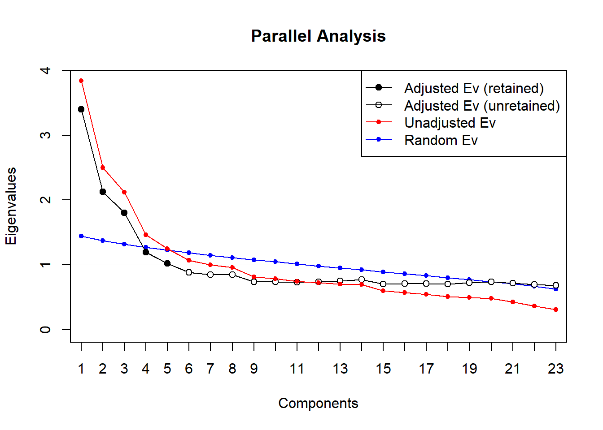
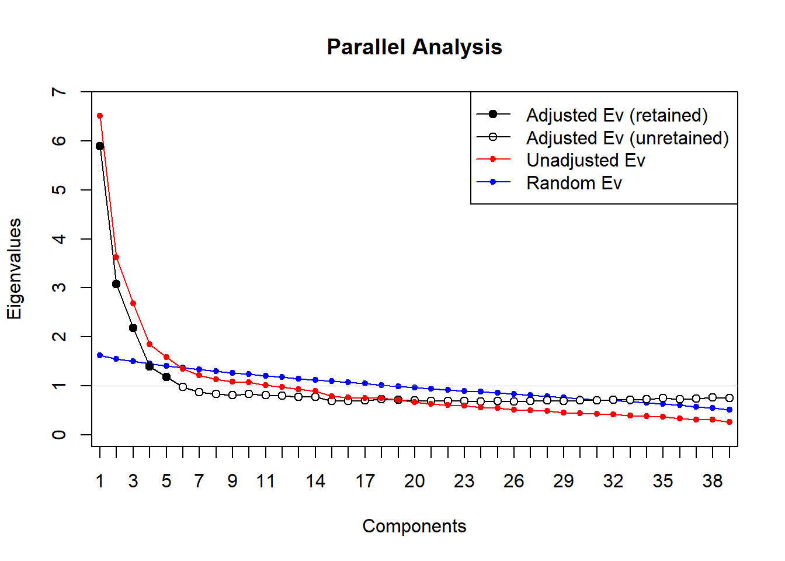

Autism Quotient factors
Now that our data are useable, we need to look at the factor structure of the Autism Quotient (AQ) and to select the autism items to be retained for the remaining analyses.
library(dplyr)##
## Attaching package: 'dplyr'## The following objects are masked from 'package:stats':
##
## filter, lag## The following objects are masked from 'package:base':
##
## intersect, setdiff, setequal, unionlibrary(psych)
library(paran)## Loading required package: MASS##
## Attaching package: 'MASS'## The following object is masked from 'package:dplyr':
##
## selectlibrary(lavaan)## This is lavaan 0.7-3
## lavaan is FREE software! Please report any bugs.##
## Attaching package: 'lavaan'## The following object is masked from 'package:psych':
##
## cor2covlibrary(mice)##
## Attaching package: 'mice'## The following object is masked from 'package:stats':
##
## filter## The following objects are masked from 'package:base':
##
## cbind, rbindImpute missing values
survey_original = read.csv("survey content.csv")
AQ = survey_original %>% dplyr::select(contains("AQ"))
AQ_imputed_results = mice(AQ, seed = 1234)##
## iter imp variable
## 1 1 AQ._4 AQ._12 AQ._14 AQ._16 AQ._18 AQ._19 AQ._20 AQ._21 AQ._22 AQ._23 AQ._24 AQ._25 AQ._26 AQ._27 AQ._28 AQ._30 AQ._32 AQ._34 AQ._35 AQ._36 AQ._37 AQ._38 AQ._40 AQ._41
## 1 2 AQ._4 AQ._12 AQ._14 AQ._16 AQ._18 AQ._19 AQ._20 AQ._21 AQ._22 AQ._23 AQ._24 AQ._25 AQ._26 AQ._27 AQ._28 AQ._30 AQ._32 AQ._34 AQ._35 AQ._36 AQ._37 AQ._38 AQ._40 AQ._41
## 1 3 AQ._4 AQ._12 AQ._14 AQ._16 AQ._18 AQ._19 AQ._20 AQ._21 AQ._22 AQ._23 AQ._24 AQ._25 AQ._26 AQ._27 AQ._28 AQ._30 AQ._32 AQ._34 AQ._35 AQ._36 AQ._37 AQ._38 AQ._40 AQ._41
## 1 4 AQ._4 AQ._12 AQ._14 AQ._16 AQ._18 AQ._19 AQ._20 AQ._21 AQ._22 AQ._23 AQ._24 AQ._25 AQ._26 AQ._27 AQ._28 AQ._30 AQ._32 AQ._34 AQ._35 AQ._36 AQ._37 AQ._38 AQ._40 AQ._41
## 1 5 AQ._4 AQ._12 AQ._14 AQ._16 AQ._18 AQ._19 AQ._20 AQ._21 AQ._22 AQ._23 AQ._24 AQ._25 AQ._26 AQ._27 AQ._28 AQ._30 AQ._32 AQ._34 AQ._35 AQ._36 AQ._37 AQ._38 AQ._40 AQ._41
## 2 1 AQ._4 AQ._12 AQ._14 AQ._16 AQ._18 AQ._19 AQ._20 AQ._21 AQ._22 AQ._23 AQ._24 AQ._25 AQ._26 AQ._27 AQ._28 AQ._30 AQ._32 AQ._34 AQ._35 AQ._36 AQ._37 AQ._38 AQ._40 AQ._41
## 2 2 AQ._4 AQ._12 AQ._14 AQ._16 AQ._18 AQ._19 AQ._20 AQ._21 AQ._22 AQ._23 AQ._24 AQ._25 AQ._26 AQ._27 AQ._28 AQ._30 AQ._32 AQ._34 AQ._35 AQ._36 AQ._37 AQ._38 AQ._40 AQ._41
## 2 3 AQ._4 AQ._12 AQ._14 AQ._16 AQ._18 AQ._19 AQ._20 AQ._21 AQ._22 AQ._23 AQ._24 AQ._25 AQ._26 AQ._27 AQ._28 AQ._30 AQ._32 AQ._34 AQ._35 AQ._36 AQ._37 AQ._38 AQ._40 AQ._41
## 2 4 AQ._4 AQ._12 AQ._14 AQ._16 AQ._18 AQ._19 AQ._20 AQ._21 AQ._22 AQ._23 AQ._24 AQ._25 AQ._26 AQ._27 AQ._28 AQ._30 AQ._32 AQ._34 AQ._35 AQ._36 AQ._37 AQ._38 AQ._40 AQ._41
## 2 5 AQ._4 AQ._12 AQ._14 AQ._16 AQ._18 AQ._19 AQ._20 AQ._21 AQ._22 AQ._23 AQ._24 AQ._25 AQ._26 AQ._27 AQ._28 AQ._30 AQ._32 AQ._34 AQ._35 AQ._36 AQ._37 AQ._38 AQ._40 AQ._41
## 3 1 AQ._4 AQ._12 AQ._14 AQ._16 AQ._18 AQ._19 AQ._20 AQ._21 AQ._22 AQ._23 AQ._24 AQ._25 AQ._26 AQ._27 AQ._28 AQ._30 AQ._32 AQ._34 AQ._35 AQ._36 AQ._37 AQ._38 AQ._40 AQ._41
## 3 2 AQ._4 AQ._12 AQ._14 AQ._16 AQ._18 AQ._19 AQ._20 AQ._21 AQ._22 AQ._23 AQ._24 AQ._25 AQ._26 AQ._27 AQ._28 AQ._30 AQ._32 AQ._34 AQ._35 AQ._36 AQ._37 AQ._38 AQ._40 AQ._41
## 3 3 AQ._4 AQ._12 AQ._14 AQ._16 AQ._18 AQ._19 AQ._20 AQ._21 AQ._22 AQ._23 AQ._24 AQ._25 AQ._26 AQ._27 AQ._28 AQ._30 AQ._32 AQ._34 AQ._35 AQ._36 AQ._37 AQ._38 AQ._40 AQ._41
## 3 4 AQ._4 AQ._12 AQ._14 AQ._16 AQ._18 AQ._19 AQ._20 AQ._21 AQ._22 AQ._23 AQ._24 AQ._25 AQ._26 AQ._27 AQ._28 AQ._30 AQ._32 AQ._34 AQ._35 AQ._36 AQ._37 AQ._38 AQ._40 AQ._41
## 3 5 AQ._4 AQ._12 AQ._14 AQ._16 AQ._18 AQ._19 AQ._20 AQ._21 AQ._22 AQ._23 AQ._24 AQ._25 AQ._26 AQ._27 AQ._28 AQ._30 AQ._32 AQ._34 AQ._35 AQ._36 AQ._37 AQ._38 AQ._40 AQ._41
## 4 1 AQ._4 AQ._12 AQ._14 AQ._16 AQ._18 AQ._19 AQ._20 AQ._21 AQ._22 AQ._23 AQ._24 AQ._25 AQ._26 AQ._27 AQ._28 AQ._30 AQ._32 AQ._34 AQ._35 AQ._36 AQ._37 AQ._38 AQ._40 AQ._41
## 4 2 AQ._4 AQ._12 AQ._14 AQ._16 AQ._18 AQ._19 AQ._20 AQ._21 AQ._22 AQ._23 AQ._24 AQ._25 AQ._26 AQ._27 AQ._28 AQ._30 AQ._32 AQ._34 AQ._35 AQ._36 AQ._37 AQ._38 AQ._40 AQ._41
## 4 3 AQ._4 AQ._12 AQ._14 AQ._16 AQ._18 AQ._19 AQ._20 AQ._21 AQ._22 AQ._23 AQ._24 AQ._25 AQ._26 AQ._27 AQ._28 AQ._30 AQ._32 AQ._34 AQ._35 AQ._36 AQ._37 AQ._38 AQ._40 AQ._41
## 4 4 AQ._4 AQ._12 AQ._14 AQ._16 AQ._18 AQ._19 AQ._20 AQ._21 AQ._22 AQ._23 AQ._24 AQ._25 AQ._26 AQ._27 AQ._28 AQ._30 AQ._32 AQ._34 AQ._35 AQ._36 AQ._37 AQ._38 AQ._40 AQ._41
## 4 5 AQ._4 AQ._12 AQ._14 AQ._16 AQ._18 AQ._19 AQ._20 AQ._21 AQ._22 AQ._23 AQ._24 AQ._25 AQ._26 AQ._27 AQ._28 AQ._30 AQ._32 AQ._34 AQ._35 AQ._36 AQ._37 AQ._38 AQ._40 AQ._41
## 5 1 AQ._4 AQ._12 AQ._14 AQ._16 AQ._18 AQ._19 AQ._20 AQ._21 AQ._22 AQ._23 AQ._24 AQ._25 AQ._26 AQ._27 AQ._28 AQ._30 AQ._32 AQ._34 AQ._35 AQ._36 AQ._37 AQ._38 AQ._40 AQ._41
## 5 2 AQ._4 AQ._12 AQ._14 AQ._16 AQ._18 AQ._19 AQ._20 AQ._21 AQ._22 AQ._23 AQ._24 AQ._25 AQ._26 AQ._27 AQ._28 AQ._30 AQ._32 AQ._34 AQ._35 AQ._36 AQ._37 AQ._38 AQ._40 AQ._41
## 5 3 AQ._4 AQ._12 AQ._14 AQ._16 AQ._18 AQ._19 AQ._20 AQ._21 AQ._22 AQ._23 AQ._24 AQ._25 AQ._26 AQ._27 AQ._28 AQ._30 AQ._32 AQ._34 AQ._35 AQ._36 AQ._37 AQ._38 AQ._40 AQ._41
## 5 4 AQ._4 AQ._12 AQ._14 AQ._16 AQ._18 AQ._19 AQ._20 AQ._21 AQ._22 AQ._23 AQ._24 AQ._25 AQ._26 AQ._27 AQ._28 AQ._30 AQ._32 AQ._34 AQ._35 AQ._36 AQ._37 AQ._38 AQ._40 AQ._41
## 5 5 AQ._4 AQ._12 AQ._14 AQ._16 AQ._18 AQ._19 AQ._20 AQ._21 AQ._22 AQ._23 AQ._24 AQ._25 AQ._26 AQ._27 AQ._28 AQ._30 AQ._32 AQ._34 AQ._35 AQ._36 AQ._37 AQ._38 AQ._40 AQ._41AQ_imputed = complete(AQ_imputed_results,2)
AQ_imputed = data.frame(ID = survey_original$ID, AQ_imputed)
write.csv(AQ_imputed, "AQ imputed.csv")Pull AQ items only, which has 39 questions total.
survey = read.csv("AQ imputed.csv") %>% dplyr::select(-X, -ID)The first step is to look at the internal consistency and performance of the AQ factors. Note that I am not entirely confident as to why certain items were excluded when examining these factors beyond replication from Zhu et al., (2022).
Social Discourse Convention Items, to look at internal consistency of 1) the original Social Discourse convention items from Zhu et al. (2022); 2) all Social Discourse Convention items, including items from BAAP and SRS-2; and 3) all Social Discourse Convention items minus from SRS-2 (i.e., AQ._5).
##Zhu (2022) Social Discourse Convention Items
survey %>% dplyr::select(AQ._1:AQ._3) %>% corr.test()## Call:corr.test(x = .)
## Correlation matrix
## AQ._1 AQ._2 AQ._3
## AQ._1 1.00 0.32 0.38
## AQ._2 0.32 1.00 0.30
## AQ._3 0.38 0.30 1.00
## Sample Size
## [1] 422
## Probability values (Entries above the diagonal are adjusted for multiple tests.)
## AQ._1 AQ._2 AQ._3
## AQ._1 0 0 0
## AQ._2 0 0 0
## AQ._3 0 0 0
##
## To see confidence intervals of the correlations, print with the short=FALSE optionsurvey %>% dplyr::select(AQ._1:AQ._3) %>% performance::item_intercor()## [1] 0.3313883survey %>% dplyr::select(AQ._1:AQ._3) %>% psych::alpha()##
## Reliability analysis
## Call: psych::alpha(x = .)
##
## raw_alpha std.alpha G6(smc) average_r S/N ase mean sd median_r
## 0.6 0.6 0.5 0.33 1.5 0.034 2.3 0.8 0.32
##
## 95% confidence boundaries
## lower alpha upper
## Feldt 0.52 0.6 0.66
## Duhachek 0.53 0.6 0.66
##
## Reliability if an item is dropped:
## raw_alpha std.alpha G6(smc) average_r S/N alpha se var.r med.r
## AQ._1 0.46 0.46 0.30 0.30 0.84 0.053 NA 0.30
## AQ._2 0.54 0.55 0.38 0.38 1.21 0.044 NA 0.38
## AQ._3 0.49 0.49 0.32 0.32 0.95 0.050 NA 0.32
##
## Item statistics
## n raw.r std.r r.cor r.drop mean sd
## AQ._1 422 0.79 0.76 0.56 0.43 2.6 1.18
## AQ._2 422 0.72 0.72 0.48 0.37 2.0 1.05
## AQ._3 422 0.72 0.75 0.54 0.42 2.3 0.98
##
## Non missing response frequency for each item
## 1 2 3 4 5 miss
## AQ._1 0.15 0.43 0.15 0.19 0.08 0
## AQ._2 0.33 0.46 0.09 0.08 0.04 0
## AQ._3 0.20 0.50 0.16 0.11 0.02 0##all Social Discourse Convention items, including items from BAAP and SRS-2
survey %>% dplyr::select(AQ._1:AQ._8) %>% performance::item_intercor()## [1] 0.3212605survey %>% dplyr::select(AQ._1:AQ._8) %>% psych::alpha()##
## Reliability analysis
## Call: psych::alpha(x = .)
##
## raw_alpha std.alpha G6(smc) average_r S/N ase mean sd median_r
## 0.79 0.79 0.79 0.32 3.8 0.015 2.5 0.7 0.32
##
## 95% confidence boundaries
## lower alpha upper
## Feldt 0.76 0.79 0.82
## Duhachek 0.76 0.79 0.82
##
## Reliability if an item is dropped:
## raw_alpha std.alpha G6(smc) average_r S/N alpha se var.r med.r
## AQ._1 0.77 0.77 0.76 0.32 3.3 0.017 0.0084 0.32
## AQ._2 0.76 0.76 0.76 0.31 3.2 0.018 0.0095 0.30
## AQ._3 0.77 0.77 0.75 0.32 3.3 0.017 0.0056 0.32
## AQ._4 0.76 0.76 0.75 0.31 3.2 0.018 0.0066 0.31
## AQ._5 0.77 0.77 0.76 0.33 3.4 0.017 0.0090 0.32
## AQ._6 0.76 0.76 0.75 0.32 3.2 0.018 0.0090 0.31
## AQ._7 0.78 0.79 0.77 0.34 3.7 0.016 0.0049 0.34
## AQ._8 0.77 0.76 0.75 0.32 3.2 0.017 0.0074 0.32
##
## Item statistics
## n raw.r std.r r.cor r.drop mean sd
## AQ._1 422 0.65 0.64 0.57 0.51 2.6 1.18
## AQ._2 422 0.66 0.67 0.60 0.54 2.0 1.05
## AQ._3 422 0.63 0.64 0.58 0.50 2.3 0.98
## AQ._4 422 0.69 0.68 0.62 0.54 2.5 1.19
## AQ._5 422 0.62 0.62 0.53 0.47 2.8 1.16
## AQ._6 422 0.67 0.66 0.59 0.53 3.1 1.20
## AQ._7 422 0.54 0.54 0.44 0.39 2.4 1.02
## AQ._8 422 0.63 0.65 0.59 0.51 2.2 0.94
##
## Non missing response frequency for each item
## 1 2 3 4 5 miss
## AQ._1 0.15 0.43 0.15 0.19 0.08 0
## AQ._2 0.33 0.46 0.09 0.08 0.04 0
## AQ._3 0.20 0.50 0.16 0.11 0.02 0
## AQ._4 0.21 0.41 0.15 0.17 0.07 0
## AQ._5 0.10 0.39 0.21 0.21 0.09 0
## AQ._6 0.07 0.31 0.19 0.28 0.15 0
## AQ._7 0.15 0.50 0.17 0.14 0.04 0
## AQ._8 0.20 0.54 0.15 0.08 0.03 0##all Social Discourse Convention items minus item from SRS-2 (i.e., AQ._5)
survey %>% dplyr::select(AQ._1:AQ._8, -AQ._5) %>% psych::alpha()##
## Reliability analysis
## Call: psych::alpha(x = .)
##
## raw_alpha std.alpha G6(smc) average_r S/N ase mean sd median_r
## 0.77 0.77 0.76 0.33 3.4 0.017 2.5 0.7 0.32
##
## 95% confidence boundaries
## lower alpha upper
## Feldt 0.74 0.77 0.8
## Duhachek 0.74 0.77 0.8
##
## Reliability if an item is dropped:
## raw_alpha std.alpha G6(smc) average_r S/N alpha se var.r med.r
## AQ._1 0.74 0.74 0.72 0.32 2.9 0.019 0.0106 0.32
## AQ._2 0.74 0.74 0.72 0.32 2.8 0.020 0.0120 0.32
## AQ._3 0.74 0.74 0.72 0.32 2.9 0.019 0.0065 0.32
## AQ._4 0.73 0.73 0.71 0.31 2.7 0.020 0.0081 0.31
## AQ._6 0.74 0.74 0.72 0.32 2.9 0.020 0.0112 0.32
## AQ._7 0.77 0.78 0.75 0.37 3.5 0.017 0.0045 0.38
## AQ._8 0.74 0.74 0.72 0.32 2.8 0.019 0.0090 0.32
##
## Item statistics
## n raw.r std.r r.cor r.drop mean sd
## AQ._1 422 0.68 0.66 0.58 0.51 2.6 1.18
## AQ._2 422 0.67 0.67 0.59 0.52 2.0 1.05
## AQ._3 422 0.65 0.66 0.59 0.50 2.3 0.98
## AQ._4 422 0.72 0.71 0.65 0.56 2.5 1.19
## AQ._6 422 0.69 0.66 0.59 0.52 3.1 1.20
## AQ._7 422 0.51 0.52 0.38 0.33 2.4 1.02
## AQ._8 422 0.65 0.67 0.60 0.51 2.2 0.94
##
## Non missing response frequency for each item
## 1 2 3 4 5 miss
## AQ._1 0.15 0.43 0.15 0.19 0.08 0
## AQ._2 0.33 0.46 0.09 0.08 0.04 0
## AQ._3 0.20 0.50 0.16 0.11 0.02 0
## AQ._4 0.21 0.41 0.15 0.17 0.07 0
## AQ._6 0.07 0.31 0.19 0.28 0.15 0
## AQ._7 0.15 0.50 0.17 0.14 0.04 0
## AQ._8 0.20 0.54 0.15 0.08 0.03 0Interest in Details/Pattern Items, to look at internal consistency of 1) the original Interest in Details/Pattern items from Zhu et al., (2022); 2) all Interest in Details/Pattern items, including items from IASQ; and 3) all Interest in Details/Pattern items, but excluding items 15 and 16 (which I assume was originally due to poor fit but can’t be sure; this was what Iris had included).
##Zhu (2022) Interest in Details/Pattern Items
survey %>% dplyr::select(AQ._9:AQ._14) %>% corr.test()## Call:corr.test(x = .)
## Correlation matrix
## AQ._9 AQ._10 AQ._12 AQ._13 AQ._14
## AQ._9 1.00 0.21 0.30 0.25 0.19
## AQ._10 0.21 1.00 0.11 0.37 0.29
## AQ._12 0.30 0.11 1.00 0.21 0.17
## AQ._13 0.25 0.37 0.21 1.00 0.25
## AQ._14 0.19 0.29 0.17 0.25 1.00
## Sample Size
## [1] 422
## Probability values (Entries above the diagonal are adjusted for multiple tests.)
## AQ._9 AQ._10 AQ._12 AQ._13 AQ._14
## AQ._9 0 0.00 0.00 0 0
## AQ._10 0 0.00 0.02 0 0
## AQ._12 0 0.02 0.00 0 0
## AQ._13 0 0.00 0.00 0 0
## AQ._14 0 0.00 0.00 0 0
##
## To see confidence intervals of the correlations, print with the short=FALSE optionsurvey %>% dplyr::select(AQ._9:AQ._14) %>% psych::alpha()##
## Reliability analysis
## Call: psych::alpha(x = .)
##
## raw_alpha std.alpha G6(smc) average_r S/N ase mean sd median_r
## 0.6 0.6 0.56 0.23 1.5 0.03 2.8 0.7 0.23
##
## 95% confidence boundaries
## lower alpha upper
## Feldt 0.54 0.6 0.66
## Duhachek 0.54 0.6 0.66
##
## Reliability if an item is dropped:
## raw_alpha std.alpha G6(smc) average_r S/N alpha se var.r med.r
## AQ._9 0.54 0.55 0.49 0.23 1.2 0.036 0.0083 0.23
## AQ._10 0.54 0.54 0.47 0.23 1.2 0.037 0.0025 0.23
## AQ._12 0.58 0.58 0.52 0.26 1.4 0.033 0.0039 0.25
## AQ._13 0.52 0.52 0.46 0.21 1.1 0.038 0.0055 0.20
## AQ._14 0.56 0.56 0.50 0.24 1.3 0.035 0.0077 0.23
##
## Item statistics
## n raw.r std.r r.cor r.drop mean sd
## AQ._9 422 0.62 0.63 0.47 0.37 2.5 1.08
## AQ._10 422 0.61 0.64 0.50 0.38 3.5 0.99
## AQ._12 422 0.58 0.57 0.39 0.30 2.6 1.12
## AQ._13 422 0.69 0.66 0.54 0.41 2.8 1.24
## AQ._14 422 0.61 0.61 0.44 0.34 2.7 1.16
##
## Non missing response frequency for each item
## 1 2 3 4 5 miss
## AQ._9 0.18 0.41 0.21 0.18 0.04 0
## AQ._10 0.02 0.13 0.32 0.36 0.18 0
## AQ._12 0.16 0.38 0.24 0.15 0.06 0
## AQ._13 0.15 0.35 0.16 0.24 0.09 0
## AQ._14 0.13 0.38 0.21 0.20 0.08 0##all Interest in Details/Pattern Items, including items from IASQ
survey %>% dplyr::select(AQ._9:AQ._17) %>% psych::alpha()##
## Reliability analysis
## Call: psych::alpha(x = .)
##
## raw_alpha std.alpha G6(smc) average_r S/N ase mean sd median_r
## 0.68 0.68 0.68 0.21 2.2 0.023 2.7 0.62 0.2
##
## 95% confidence boundaries
## lower alpha upper
## Feldt 0.63 0.68 0.73
## Duhachek 0.64 0.68 0.73
##
## Reliability if an item is dropped:
## raw_alpha std.alpha G6(smc) average_r S/N alpha se var.r med.r
## AQ._9 0.66 0.66 0.65 0.22 1.9 0.025 0.0135 0.19
## AQ._10 0.64 0.65 0.64 0.21 1.8 0.026 0.0134 0.19
## AQ._12 0.67 0.67 0.67 0.23 2.1 0.024 0.0125 0.21
## AQ._13 0.64 0.65 0.64 0.21 1.8 0.026 0.0137 0.19
## AQ._14 0.63 0.63 0.62 0.20 1.7 0.028 0.0092 0.19
## AQ._15 0.69 0.69 0.68 0.24 2.2 0.023 0.0110 0.22
## AQ._16 0.66 0.67 0.66 0.22 2.0 0.025 0.0135 0.21
## AQ._17 0.60 0.61 0.59 0.18 1.5 0.029 0.0071 0.18
##
## Item statistics
## n raw.r std.r r.cor r.drop mean sd
## AQ._9 422 0.53 0.54 0.43 0.35 2.5 1.08
## AQ._10 422 0.57 0.59 0.50 0.41 3.5 0.99
## AQ._12 422 0.48 0.48 0.35 0.28 2.6 1.12
## AQ._13 422 0.60 0.58 0.49 0.40 2.8 1.24
## AQ._14 422 0.63 0.63 0.58 0.46 2.7 1.16
## AQ._15 422 0.42 0.42 0.25 0.21 2.7 1.16
## AQ._16 422 0.51 0.51 0.39 0.32 2.5 1.10
## AQ._17 422 0.71 0.71 0.70 0.57 2.5 1.10
##
## Non missing response frequency for each item
## 1 2 3 4 5 miss
## AQ._9 0.18 0.41 0.21 0.18 0.04 0
## AQ._10 0.02 0.13 0.32 0.36 0.18 0
## AQ._12 0.16 0.38 0.24 0.15 0.06 0
## AQ._13 0.15 0.35 0.16 0.24 0.09 0
## AQ._14 0.13 0.38 0.21 0.20 0.08 0
## AQ._15 0.10 0.42 0.20 0.18 0.10 0
## AQ._16 0.15 0.47 0.17 0.15 0.06 0
## AQ._17 0.16 0.43 0.21 0.15 0.06 0##all Interest in Details/Pattern Items, including items from IASQ but with poorly fitting items excluded
survey %>% dplyr::select(AQ._9:AQ._14, AQ._17) %>% psych::alpha()##
## Reliability analysis
## Call: psych::alpha(x = .)
##
## raw_alpha std.alpha G6(smc) average_r S/N ase mean sd median_r
## 0.68 0.68 0.67 0.27 2.2 0.024 2.8 0.69 0.25
##
## 95% confidence boundaries
## lower alpha upper
## Feldt 0.63 0.68 0.73
## Duhachek 0.64 0.68 0.73
##
## Reliability if an item is dropped:
## raw_alpha std.alpha G6(smc) average_r S/N alpha se var.r med.r
## AQ._9 0.65 0.65 0.63 0.27 1.9 0.027 0.0150 0.26
## AQ._10 0.65 0.65 0.62 0.27 1.8 0.027 0.0120 0.25
## AQ._12 0.68 0.68 0.65 0.30 2.1 0.025 0.0106 0.28
## AQ._13 0.64 0.64 0.62 0.26 1.8 0.027 0.0148 0.25
## AQ._14 0.63 0.63 0.59 0.25 1.7 0.029 0.0050 0.26
## AQ._17 0.60 0.60 0.56 0.23 1.5 0.030 0.0055 0.23
##
## Item statistics
## n raw.r std.r r.cor r.drop mean sd
## AQ._9 422 0.59 0.60 0.46 0.38 2.5 1.08
## AQ._10 422 0.59 0.61 0.48 0.40 3.5 0.99
## AQ._12 422 0.54 0.54 0.37 0.31 2.6 1.12
## AQ._13 422 0.65 0.63 0.50 0.41 2.8 1.24
## AQ._14 422 0.66 0.66 0.58 0.45 2.7 1.16
## AQ._17 422 0.71 0.71 0.66 0.53 2.5 1.10
##
## Non missing response frequency for each item
## 1 2 3 4 5 miss
## AQ._9 0.18 0.41 0.21 0.18 0.04 0
## AQ._10 0.02 0.13 0.32 0.36 0.18 0
## AQ._12 0.16 0.38 0.24 0.15 0.06 0
## AQ._13 0.15 0.35 0.16 0.24 0.09 0
## AQ._14 0.13 0.38 0.21 0.20 0.08 0
## AQ._17 0.16 0.43 0.21 0.15 0.06 0Imagination Ability Items, to look at internal consistency of 1) the original Imagination Ability items from Zhu et al., (2022); 2) all Imagination Ability items, including two new items created for this survey; and 3) all Imagination Ability items, but excluding two new items created for this survey.
##Zhu (2022) Imagination Ability Items
survey %>% dplyr::select(AQ._18:AQ._22) %>% corr.test()## Call:corr.test(x = .)
## Correlation matrix
## AQ._18 AQ._19 AQ._20 AQ._21 AQ._22
## AQ._18 1.00 0.32 0.21 0.17 0.54
## AQ._19 0.32 1.00 0.09 0.20 0.21
## AQ._20 0.21 0.09 1.00 0.31 0.16
## AQ._21 0.17 0.20 0.31 1.00 0.15
## AQ._22 0.54 0.21 0.16 0.15 1.00
## Sample Size
## [1] 422
## Probability values (Entries above the diagonal are adjusted for multiple tests.)
## AQ._18 AQ._19 AQ._20 AQ._21 AQ._22
## AQ._18 0 0.00 0.00 0 0
## AQ._19 0 0.00 0.07 0 0
## AQ._20 0 0.07 0.00 0 0
## AQ._21 0 0.00 0.00 0 0
## AQ._22 0 0.00 0.00 0 0
##
## To see confidence intervals of the correlations, print with the short=FALSE optionsurvey %>% dplyr::select(AQ._18:AQ._22) %>% psych::alpha()##
## Reliability analysis
## Call: psych::alpha(x = .)
##
## raw_alpha std.alpha G6(smc) average_r S/N ase mean sd median_r
## 0.61 0.61 0.59 0.24 1.6 0.031 2.1 0.64 0.2
##
## 95% confidence boundaries
## lower alpha upper
## Feldt 0.54 0.61 0.66
## Duhachek 0.55 0.61 0.67
##
## Reliability if an item is dropped:
## raw_alpha std.alpha G6(smc) average_r S/N alpha se var.r med.r
## AQ._18 0.48 0.48 0.42 0.19 0.92 0.042 0.0057 0.18
## AQ._19 0.58 0.58 0.56 0.26 1.39 0.034 0.0230 0.19
## AQ._20 0.59 0.59 0.56 0.27 1.45 0.033 0.0220 0.20
## AQ._21 0.57 0.58 0.55 0.26 1.38 0.034 0.0255 0.21
## AQ._22 0.52 0.53 0.47 0.22 1.11 0.038 0.0081 0.20
##
## Item statistics
## n raw.r std.r r.cor r.drop mean sd
## AQ._18 422 0.71 0.72 0.67 0.50 2.1 1.01
## AQ._19 422 0.59 0.58 0.39 0.31 2.1 1.06
## AQ._20 422 0.58 0.57 0.38 0.29 2.4 1.08
## AQ._21 422 0.58 0.59 0.40 0.32 1.9 0.99
## AQ._22 422 0.65 0.66 0.57 0.41 2.1 0.99
##
## Non missing response frequency for each item
## 1 2 3 4 5 miss
## AQ._18 0.27 0.46 0.15 0.09 0.03 0
## AQ._19 0.35 0.41 0.13 0.08 0.04 0
## AQ._20 0.20 0.42 0.20 0.14 0.04 0
## AQ._21 0.39 0.40 0.11 0.08 0.02 0
## AQ._22 0.27 0.47 0.14 0.09 0.02 0##all Imagination Ability Items, including two new items
survey %>% dplyr::select(AQ._18:AQ._26) %>% corr.test()## Call:corr.test(x = .)
## Correlation matrix
## AQ._18 AQ._19 AQ._20 AQ._21 AQ._22 AQ._23 AQ._24 AQ._25 AQ._26
## AQ._18 1.00 0.32 0.21 0.17 0.54 0.14 0.19 0.48 0.35
## AQ._19 0.32 1.00 0.09 0.20 0.21 0.04 0.02 0.30 0.09
## AQ._20 0.21 0.09 1.00 0.31 0.16 0.00 0.06 0.20 0.15
## AQ._21 0.17 0.20 0.31 1.00 0.15 0.18 -0.02 0.28 0.10
## AQ._22 0.54 0.21 0.16 0.15 1.00 0.21 0.18 0.47 0.28
## AQ._23 0.14 0.04 0.00 0.18 0.21 1.00 0.12 0.21 0.09
## AQ._24 0.19 0.02 0.06 -0.02 0.18 0.12 1.00 0.13 0.07
## AQ._25 0.48 0.30 0.20 0.28 0.47 0.21 0.13 1.00 0.28
## AQ._26 0.35 0.09 0.15 0.10 0.28 0.09 0.07 0.28 1.00
## Sample Size
## [1] 422
## Probability values (Entries above the diagonal are adjusted for multiple tests.)
## AQ._18 AQ._19 AQ._20 AQ._21 AQ._22 AQ._23 AQ._24 AQ._25 AQ._26
## AQ._18 0 0.00 0.00 0.01 0.00 0.04 0.00 0.00 0.00
## AQ._19 0 0.00 0.60 0.00 0.00 1.00 1.00 0.00 0.60
## AQ._20 0 0.07 0.00 0.00 0.02 1.00 1.00 0.00 0.03
## AQ._21 0 0.00 0.00 0.00 0.02 0.00 1.00 0.00 0.36
## AQ._22 0 0.00 0.00 0.00 0.00 0.00 0.00 0.00 0.00
## AQ._23 0 0.41 0.94 0.00 0.00 0.00 0.20 0.00 0.60
## AQ._24 0 0.64 0.22 0.67 0.00 0.02 0.00 0.08 1.00
## AQ._25 0 0.00 0.00 0.00 0.00 0.00 0.01 0.00 0.00
## AQ._26 0 0.07 0.00 0.04 0.00 0.08 0.18 0.00 0.00
##
## To see confidence intervals of the correlations, print with the short=FALSE optionsurvey %>% dplyr::select(AQ._18:AQ._26) %>% psych::alpha()##
## Reliability analysis
## Call: psych::alpha(x = .)
##
## raw_alpha std.alpha G6(smc) average_r S/N ase mean sd median_r
## 0.67 0.68 0.69 0.19 2.2 0.024 2.2 0.54 0.18
##
## 95% confidence boundaries
## lower alpha upper
## Feldt 0.62 0.67 0.72
## Duhachek 0.62 0.67 0.72
##
## Reliability if an item is dropped:
## raw_alpha std.alpha G6(smc) average_r S/N alpha se var.r med.r
## AQ._18 0.59 0.61 0.61 0.16 1.6 0.030 0.012 0.16
## AQ._19 0.66 0.67 0.67 0.20 2.0 0.025 0.018 0.18
## AQ._20 0.66 0.67 0.68 0.21 2.1 0.025 0.019 0.18
## AQ._21 0.65 0.67 0.67 0.20 2.0 0.026 0.019 0.18
## AQ._22 0.61 0.62 0.62 0.17 1.6 0.029 0.014 0.16
## AQ._23 0.67 0.68 0.69 0.21 2.2 0.024 0.019 0.19
## AQ._24 0.68 0.70 0.70 0.22 2.3 0.023 0.017 0.20
## AQ._25 0.61 0.61 0.62 0.16 1.6 0.029 0.014 0.16
## AQ._26 0.65 0.66 0.67 0.20 2.0 0.026 0.019 0.18
##
## Item statistics
## n raw.r std.r r.cor r.drop mean sd
## AQ._18 422 0.71 0.71 0.71 0.58 2.1 1.01
## AQ._19 422 0.48 0.48 0.36 0.28 2.1 1.06
## AQ._20 422 0.47 0.46 0.33 0.27 2.4 1.08
## AQ._21 422 0.49 0.49 0.39 0.31 1.9 0.99
## AQ._22 422 0.66 0.67 0.65 0.52 2.1 0.99
## AQ._23 422 0.41 0.41 0.27 0.21 2.2 1.04
## AQ._24 422 0.37 0.36 0.20 0.16 2.9 1.07
## AQ._25 422 0.67 0.70 0.68 0.56 1.9 0.83
## AQ._26 422 0.52 0.50 0.39 0.31 2.5 1.13
##
## Non missing response frequency for each item
## 1 2 3 4 5 miss
## AQ._18 0.27 0.46 0.15 0.09 0.03 0
## AQ._19 0.35 0.41 0.13 0.08 0.04 0
## AQ._20 0.20 0.42 0.20 0.14 0.04 0
## AQ._21 0.39 0.40 0.11 0.08 0.02 0
## AQ._22 0.27 0.47 0.14 0.09 0.02 0
## AQ._23 0.27 0.43 0.17 0.10 0.03 0
## AQ._24 0.06 0.36 0.24 0.27 0.07 0
## AQ._25 0.34 0.49 0.12 0.04 0.01 0
## AQ._26 0.18 0.43 0.16 0.18 0.05 0##all Imagination Ability Items, but with two new items dropped
survey %>% dplyr::select(AQ._18:AQ._26, -AQ._23,-AQ._24) %>% psych::alpha()##
## Reliability analysis
## Call: psych::alpha(x = .)
##
## raw_alpha std.alpha G6(smc) average_r S/N ase mean sd median_r
## 0.69 0.7 0.7 0.25 2.4 0.023 2.1 0.6 0.21
##
## 95% confidence boundaries
## lower alpha upper
## Feldt 0.65 0.69 0.74
## Duhachek 0.65 0.69 0.74
##
## Reliability if an item is dropped:
## raw_alpha std.alpha G6(smc) average_r S/N alpha se var.r med.r
## AQ._18 0.61 0.63 0.61 0.22 1.7 0.030 0.011 0.20
## AQ._19 0.68 0.69 0.68 0.28 2.3 0.024 0.018 0.28
## AQ._20 0.69 0.70 0.69 0.28 2.3 0.023 0.019 0.28
## AQ._21 0.68 0.70 0.68 0.28 2.3 0.024 0.019 0.28
## AQ._22 0.64 0.65 0.63 0.23 1.8 0.028 0.012 0.21
## AQ._25 0.63 0.63 0.62 0.22 1.7 0.028 0.015 0.20
## AQ._26 0.68 0.69 0.68 0.27 2.3 0.024 0.018 0.21
##
## Item statistics
## n raw.r std.r r.cor r.drop mean sd
## AQ._18 422 0.73 0.73 0.71 0.58 2.1 1.01
## AQ._19 422 0.53 0.53 0.39 0.31 2.1 1.06
## AQ._20 422 0.52 0.50 0.36 0.29 2.4 1.08
## AQ._21 422 0.52 0.53 0.39 0.32 1.9 0.99
## AQ._22 422 0.66 0.67 0.62 0.49 2.1 0.99
## AQ._25 422 0.69 0.71 0.67 0.56 1.9 0.83
## AQ._26 422 0.55 0.53 0.40 0.33 2.5 1.13
##
## Non missing response frequency for each item
## 1 2 3 4 5 miss
## AQ._18 0.27 0.46 0.15 0.09 0.03 0
## AQ._19 0.35 0.41 0.13 0.08 0.04 0
## AQ._20 0.20 0.42 0.20 0.14 0.04 0
## AQ._21 0.39 0.40 0.11 0.08 0.02 0
## AQ._22 0.27 0.47 0.14 0.09 0.02 0
## AQ._25 0.34 0.49 0.12 0.04 0.01 0
## AQ._26 0.18 0.43 0.16 0.18 0.05 0Social Cognition Items, to look at internal consistency of 1) the original Social Cognition items from Zhu et al., (2022); 2) all Social Cognition items, including including item from IASQ; and 3) all Social Cognition Items, but with item from IASQ dropped.
##Zhu (2022) Social Cognition Items
survey %>% dplyr::select(AQ._27:AQ._30) %>% corr.test()## Call:corr.test(x = .)
## Correlation matrix
## AQ._27 AQ._28 AQ._29 AQ._30
## AQ._27 1.00 0.42 0.24 0.36
## AQ._28 0.42 1.00 0.17 0.34
## AQ._29 0.24 0.17 1.00 0.20
## AQ._30 0.36 0.34 0.20 1.00
## Sample Size
## [1] 422
## Probability values (Entries above the diagonal are adjusted for multiple tests.)
## AQ._27 AQ._28 AQ._29 AQ._30
## AQ._27 0 0 0 0
## AQ._28 0 0 0 0
## AQ._29 0 0 0 0
## AQ._30 0 0 0 0
##
## To see confidence intervals of the correlations, print with the short=FALSE optionsurvey %>% dplyr::select(AQ._27:AQ._30) %>% psych::alpha()##
## Reliability analysis
## Call: psych::alpha(x = .)
##
## raw_alpha std.alpha G6(smc) average_r S/N ase mean sd median_r
## 0.61 0.62 0.56 0.29 1.6 0.031 2.3 0.65 0.29
##
## 95% confidence boundaries
## lower alpha upper
## Feldt 0.55 0.61 0.67
## Duhachek 0.55 0.61 0.67
##
## Reliability if an item is dropped:
## raw_alpha std.alpha G6(smc) average_r S/N alpha se var.r med.r
## AQ._27 0.47 0.48 0.39 0.24 0.93 0.045 0.0084 0.20
## AQ._28 0.52 0.52 0.43 0.27 1.09 0.041 0.0064 0.24
## AQ._29 0.64 0.64 0.54 0.37 1.77 0.030 0.0016 0.36
## AQ._30 0.53 0.53 0.45 0.28 1.14 0.040 0.0162 0.24
##
## Item statistics
## n raw.r std.r r.cor r.drop mean sd
## AQ._27 422 0.75 0.74 0.62 0.48 2.3 1.01
## AQ._28 422 0.70 0.70 0.56 0.43 2.3 0.94
## AQ._29 422 0.61 0.59 0.34 0.27 2.6 1.02
## AQ._30 422 0.66 0.70 0.53 0.41 2.0 0.84
##
## Non missing response frequency for each item
## 1 2 3 4 5 miss
## AQ._27 0.18 0.47 0.20 0.12 0.03 0
## AQ._28 0.18 0.50 0.20 0.10 0.02 0
## AQ._29 0.08 0.48 0.22 0.18 0.05 0
## AQ._30 0.27 0.56 0.10 0.06 0.01 0## all Social Cognition Items, including item from IASQ
survey %>% dplyr::select(AQ._27:AQ._35) %>% corr.test()## Call:corr.test(x = .)
## Correlation matrix
## AQ._27 AQ._28 AQ._29 AQ._30 AQ._31 AQ._32 AQ._34 AQ._35
## AQ._27 1.00 0.42 0.24 0.36 0.52 0.45 0.43 0.20
## AQ._28 0.42 1.00 0.17 0.34 0.37 0.27 0.33 0.12
## AQ._29 0.24 0.17 1.00 0.20 0.21 0.24 0.42 0.30
## AQ._30 0.36 0.34 0.20 1.00 0.39 0.31 0.35 0.04
## AQ._31 0.52 0.37 0.21 0.39 1.00 0.41 0.42 0.10
## AQ._32 0.45 0.27 0.24 0.31 0.41 1.00 0.44 0.25
## AQ._34 0.43 0.33 0.42 0.35 0.42 0.44 1.00 0.20
## AQ._35 0.20 0.12 0.30 0.04 0.10 0.25 0.20 1.00
## Sample Size
## [1] 422
## Probability values (Entries above the diagonal are adjusted for multiple tests.)
## AQ._27 AQ._28 AQ._29 AQ._30 AQ._31 AQ._32 AQ._34 AQ._35
## AQ._27 0 0.00 0 0.00 0.00 0 0 0.00
## AQ._28 0 0.00 0 0.00 0.00 0 0 0.05
## AQ._29 0 0.00 0 0.00 0.00 0 0 0.00
## AQ._30 0 0.00 0 0.00 0.00 0 0 0.38
## AQ._31 0 0.00 0 0.00 0.00 0 0 0.10
## AQ._32 0 0.00 0 0.00 0.00 0 0 0.00
## AQ._34 0 0.00 0 0.00 0.00 0 0 0.00
## AQ._35 0 0.02 0 0.38 0.05 0 0 0.00
##
## To see confidence intervals of the correlations, print with the short=FALSE optionsurvey %>% dplyr::select(AQ._27:AQ._35) %>% psych::alpha()##
## Reliability analysis
## Call: psych::alpha(x = .)
##
## raw_alpha std.alpha G6(smc) average_r S/N ase mean sd median_r
## 0.77 0.78 0.77 0.3 3.5 0.017 2.3 0.6 0.32
##
## 95% confidence boundaries
## lower alpha upper
## Feldt 0.73 0.77 0.8
## Duhachek 0.73 0.77 0.8
##
## Reliability if an item is dropped:
## raw_alpha std.alpha G6(smc) average_r S/N alpha se var.r med.r
## AQ._27 0.72 0.73 0.72 0.28 2.7 0.021 0.0130 0.30
## AQ._28 0.75 0.76 0.75 0.31 3.1 0.019 0.0156 0.31
## AQ._29 0.75 0.77 0.75 0.32 3.3 0.018 0.0161 0.35
## AQ._30 0.75 0.76 0.75 0.31 3.1 0.019 0.0147 0.30
## AQ._31 0.73 0.74 0.73 0.29 2.9 0.020 0.0125 0.30
## AQ._32 0.73 0.74 0.74 0.29 2.9 0.020 0.0162 0.33
## AQ._34 0.72 0.73 0.72 0.28 2.7 0.021 0.0151 0.27
## AQ._35 0.79 0.79 0.77 0.35 3.7 0.016 0.0089 0.36
##
## Item statistics
## n raw.r std.r r.cor r.drop mean sd
## AQ._27 422 0.72 0.72 0.69 0.59 2.3 1.01
## AQ._28 422 0.59 0.60 0.51 0.44 2.3 0.94
## AQ._29 422 0.57 0.56 0.46 0.40 2.6 1.02
## AQ._30 422 0.57 0.60 0.51 0.43 2.0 0.84
## AQ._31 422 0.67 0.68 0.63 0.54 2.2 0.92
## AQ._32 422 0.66 0.67 0.61 0.54 2.0 0.83
## AQ._34 422 0.71 0.72 0.68 0.59 2.2 0.95
## AQ._35 422 0.49 0.44 0.31 0.26 3.1 1.19
##
## Non missing response frequency for each item
## 1 2 3 4 5 miss
## AQ._27 0.18 0.47 0.20 0.12 0.03 0
## AQ._28 0.18 0.50 0.20 0.10 0.02 0
## AQ._29 0.08 0.48 0.22 0.18 0.05 0
## AQ._30 0.27 0.56 0.10 0.06 0.01 0
## AQ._31 0.23 0.48 0.18 0.09 0.01 0
## AQ._32 0.26 0.51 0.17 0.05 0.00 0
## AQ._34 0.19 0.55 0.14 0.09 0.03 0
## AQ._35 0.06 0.32 0.20 0.28 0.15 0## all Social Cognition Items, but with item from IASQ dropped
survey %>% dplyr::select(AQ._27:AQ._34) %>% corr.test()## Call:corr.test(x = .)
## Correlation matrix
## AQ._27 AQ._28 AQ._29 AQ._30 AQ._31 AQ._32 AQ._34
## AQ._27 1.00 0.42 0.24 0.36 0.52 0.45 0.43
## AQ._28 0.42 1.00 0.17 0.34 0.37 0.27 0.33
## AQ._29 0.24 0.17 1.00 0.20 0.21 0.24 0.42
## AQ._30 0.36 0.34 0.20 1.00 0.39 0.31 0.35
## AQ._31 0.52 0.37 0.21 0.39 1.00 0.41 0.42
## AQ._32 0.45 0.27 0.24 0.31 0.41 1.00 0.44
## AQ._34 0.43 0.33 0.42 0.35 0.42 0.44 1.00
## Sample Size
## [1] 422
## Probability values (Entries above the diagonal are adjusted for multiple tests.)
## AQ._27 AQ._28 AQ._29 AQ._30 AQ._31 AQ._32 AQ._34
## AQ._27 0 0 0 0 0 0 0
## AQ._28 0 0 0 0 0 0 0
## AQ._29 0 0 0 0 0 0 0
## AQ._30 0 0 0 0 0 0 0
## AQ._31 0 0 0 0 0 0 0
## AQ._32 0 0 0 0 0 0 0
## AQ._34 0 0 0 0 0 0 0
##
## To see confidence intervals of the correlations, print with the short=FALSE optionsurvey %>% dplyr::select(AQ._27:AQ._34) %>% psych::alpha()##
## Reliability analysis
## Call: psych::alpha(x = .)
##
## raw_alpha std.alpha G6(smc) average_r S/N ase mean sd median_r
## 0.79 0.79 0.77 0.35 3.7 0.016 2.2 0.62 0.36
##
## 95% confidence boundaries
## lower alpha upper
## Feldt 0.75 0.79 0.82
## Duhachek 0.75 0.79 0.82
##
## Reliability if an item is dropped:
## raw_alpha std.alpha G6(smc) average_r S/N alpha se var.r med.r
## AQ._27 0.74 0.74 0.72 0.32 2.9 0.020 0.0077 0.34
## AQ._28 0.77 0.77 0.75 0.36 3.4 0.017 0.0094 0.39
## AQ._29 0.79 0.79 0.76 0.39 3.8 0.016 0.0040 0.39
## AQ._30 0.77 0.77 0.75 0.36 3.3 0.018 0.0109 0.41
## AQ._31 0.75 0.75 0.73 0.33 3.0 0.019 0.0083 0.34
## AQ._32 0.76 0.76 0.74 0.34 3.1 0.018 0.0097 0.36
## AQ._34 0.74 0.74 0.72 0.33 2.9 0.020 0.0104 0.34
##
## Item statistics
## n raw.r std.r r.cor r.drop mean sd
## AQ._27 422 0.74 0.74 0.69 0.61 2.3 1.01
## AQ._28 422 0.62 0.62 0.52 0.46 2.3 0.94
## AQ._29 422 0.55 0.54 0.41 0.36 2.6 1.02
## AQ._30 422 0.62 0.63 0.53 0.48 2.0 0.84
## AQ._31 422 0.71 0.71 0.66 0.58 2.2 0.92
## AQ._32 422 0.66 0.67 0.59 0.53 2.0 0.83
## AQ._34 422 0.73 0.73 0.68 0.60 2.2 0.95
##
## Non missing response frequency for each item
## 1 2 3 4 5 miss
## AQ._27 0.18 0.47 0.20 0.12 0.03 0
## AQ._28 0.18 0.50 0.20 0.10 0.02 0
## AQ._29 0.08 0.48 0.22 0.18 0.05 0
## AQ._30 0.27 0.56 0.10 0.06 0.01 0
## AQ._31 0.23 0.48 0.18 0.09 0.01 0
## AQ._32 0.26 0.51 0.17 0.05 0.00 0
## AQ._34 0.19 0.55 0.14 0.09 0.03 0Social Anhedonia Items; note that all items were retained in the present study.
##Zhu (2022) Social Anhedonia Items; all items retained for the present study too
survey %>% dplyr::select(AQ._36:AQ._41) %>% psych::alpha()##
## Reliability analysis
## Call: psych::alpha(x = .)
##
## raw_alpha std.alpha G6(smc) average_r S/N ase mean sd median_r
## 0.78 0.79 0.78 0.39 3.8 0.016 2.4 0.73 0.39
##
## 95% confidence boundaries
## lower alpha upper
## Feldt 0.75 0.78 0.81
## Duhachek 0.75 0.78 0.82
##
## Reliability if an item is dropped:
## raw_alpha std.alpha G6(smc) average_r S/N alpha se var.r med.r
## AQ._36 0.72 0.73 0.71 0.35 2.7 0.022 0.0126 0.33
## AQ._37 0.71 0.72 0.69 0.34 2.6 0.022 0.0088 0.33
## AQ._38 0.75 0.76 0.73 0.38 3.1 0.020 0.0109 0.39
## AQ._39 0.78 0.79 0.76 0.43 3.7 0.017 0.0146 0.41
## AQ._40 0.77 0.78 0.76 0.42 3.6 0.018 0.0149 0.39
## AQ._41 0.78 0.78 0.76 0.42 3.6 0.017 0.0129 0.40
##
## Item statistics
## n raw.r std.r r.cor r.drop mean sd
## AQ._36 422 0.78 0.79 0.74 0.66 2.3 1.01
## AQ._37 422 0.80 0.82 0.80 0.71 2.1 0.93
## AQ._38 422 0.70 0.72 0.66 0.56 2.2 0.97
## AQ._39 422 0.63 0.62 0.48 0.43 2.7 1.11
## AQ._40 422 0.63 0.64 0.52 0.46 2.5 1.02
## AQ._41 422 0.66 0.63 0.51 0.45 2.7 1.22
##
## Non missing response frequency for each item
## 1 2 3 4 5 miss
## AQ._36 0.20 0.44 0.22 0.11 0.03 0
## AQ._37 0.26 0.47 0.17 0.07 0.02 0
## AQ._38 0.25 0.47 0.18 0.07 0.03 0
## AQ._39 0.15 0.31 0.30 0.18 0.06 0
## AQ._40 0.17 0.40 0.26 0.15 0.03 0
## AQ._41 0.18 0.32 0.23 0.16 0.10 0Original AQ measures
Original AQ measures are referring to the items from Zhu et al., (2022) (excluding AQ items loading onto desire for predictability/routine, which were not included in the present study).
AQ_original = survey %>% dplyr::select(AQ._1:AQ._3, AQ._9:AQ._14, AQ._18:AQ._22, AQ._27:AQ._30, AQ._36:AQ._41)
#AQ_original = survey %>% dplyr::select(AQ._1:AQ._3, AQ._9:AQ._14, AQ._18:AQ._22, AQ._27:AQ._30, AQ._36:AQ._41) %>% dplyr::select(-AQ._20, -AQ._21, -AQ._29) ## not sure why this version of AQ_original excludes items 20, 21 and 29? They were retained in Zhu et al (2022) and in FU2Determine number of factors using Parallel Analysis
paran(AQ_original, cfa=FALSE, graph=TRUE,
color=TRUE, col=c("black", "red", "blue"))## Using eigendecomposition of correlation matrix.##
## Computing: 10% 20% 30% 40% 50% 60% 70% 80% 90% 100%##
## Results of Horn's Parallel Analysis for component retention
## 690 iterations, using the mean estimate
##
## ──────────────────────────────────────────────────
## Component Adjusted Unadjusted Estimated
## Eigenvalue Eigenvalue Bias
## ──────────────────────────────────────────────────
## 1 3.399706 3.843661 0.443954
## 2 2.128853 2.501717 0.372864
## 3 1.803328 2.121915 0.318586
## 4 1.193086 1.463038 0.269951
## 5 1.020613 1.247588 0.226975
## ──────────────────────────────────────────────────
## Criterion: retain adjusted eigenvalues > 1.
## (5 components retained)
Results suggest that five factors emerge from the Original AQ (from Zhu et al).
Now we run Principal Axis Factoring using five factors and extract the factor loadings and communalities. We can also look at the p-value, degrees of freedom, Chi-square, TLI, CFI, and RMSEA to examine fit.
mod_original_PAF = fa(AQ_original, nfactors = 5, fm = "pa") ##Principal Axis Factoring## Loading required namespace: GPArotationwrite.csv(mod_original_PAF$loadings, "original PAF loading.csv")
write.csv(mod_original_PAF$communality, "original PAF commu.csv")
mod_original_PAF$PVAL## [1] 8.769421e-11mod_original_PAF$dof## [1] 148mod_original_PAF$chi## [1] 129.0618mod_original_PAF$TLI## [1] 0.86645161 - (1 - mod_original_PAF$TLI)* mod_original_PAF$dof / mod_original_PAF$null.dof## [1] 0.9218768mod_original_PAF$RMSEA## RMSEA lower upper confidence
## 0.04686087 0.03874114 0.05511807 0.90000000AQ Exploratory Factor Analysis with five factors and maximum likelihood factor analysis.
AQ_EFA_mod_original = fa(AQ_original, nfactors = 5, fm = "ml")
write.csv(AQ_EFA_mod_original$loadings, "original EFA loadings.csv")
write.csv(AQ_EFA_mod_original$communalities, "original EFA comm.csv")
AQ_EFA_mod_original$PVAL## [1] 1.070962e-09AQ_EFA_mod_original$dof## [1] 148AQ_EFA_mod_original$chi## [1] 138.9895AQ_EFA_mod_original$RMSEA## RMSEA lower upper confidence
## 0.04506912 0.03680800 0.05342433 0.90000000AQ_EFA_mod_original$TLI## [1] 0.87644341 - (1 - AQ_EFA_mod_original$TLI)* AQ_EFA_mod_original$dof / AQ_EFA_mod_original$null.dof## [1] 0.9277218Confirmatory factor analysis with with Original AQ items only.
CFA_AQ_original_spec = "
social_anhedonia =~ AQ._36+AQ._37+AQ._38+AQ._39+AQ._40+AQ._41
detail_pattern =~ AQ._9+AQ._10+AQ._12+AQ._13+AQ._14
social_cog =~ AQ._27+AQ._28+AQ._29+AQ._30
discourse_convention =~ AQ._1 +AQ._2+AQ._3
imagination =~ AQ._18+AQ._19+AQ._20+AQ._21+AQ._22
social_anhedonia~~detail_pattern
social_anhedonia~~social_cog
social_anhedonia~~discourse_convention
social_anhedonia~~imagination
detail_pattern~~social_cog
detail_pattern~~discourse_convention
detail_pattern~~imagination
social_cog~~discourse_convention
social_cog~~imagination
discourse_convention~~imagination
"
cfa_mod_original = cfa(CFA_AQ_original_spec, AQ_original)
summary(cfa_mod_original, standardized=TRUE, fit.measures=TRUE)## lavaan 0.7-3 ended normally after 51 iterations
##
## Estimator ML
## Optimization method NLMINB
## Number of model parameters 56
##
## Number of observations 422
##
## Model Test User Model:
##
## Test statistic 492.251
## Degrees of freedom 220
## P-value (Chi-square) 0.000
##
## Browne's residual (NT model-based) test
## Test statistic 488.196
## Degrees of freedom 220
## P-value (Chi-square) 0.000
##
## Model Test Baseline Model:
##
## Test statistic 2076.196
## Degrees of freedom 253
## P-value 0.000
##
## User Model versus Baseline Model:
##
## Comparative Fit Index (CFI) 0.851
## Tucker-Lewis Index (TLI) 0.828
##
## Loglikelihood and Information Criteria:
##
## Loglikelihood user model (H0) -13339.416
## Loglikelihood unrestricted model (H1) -13093.290
##
## Akaike (AIC) 26790.831
## Bayesian (BIC) 27017.351
## Sample-size adjusted Bayesian (SABIC) 26839.645
##
## Root Mean Square Error of Approximation:
##
## RMSEA 0.054
## 90 Percent confidence interval - lower 0.048
## 90 Percent confidence interval - upper 0.061
## P-value H_0: RMSEA <= 0.050 0.140
## P-value H_0: RMSEA >= 0.080 0.000
##
## Standardized Root Mean Square Residual:
##
## SRMR 0.064
##
## Goodness of Fit Index:
##
## Goodness of Fit Index (GFI) 0.948
## 90 Percent confidence interval - lower 0.935
## 90 Percent confidence interval - upper 0.959
##
## Parameter Estimates:
##
## Standard errors Standard
## Information Expected
## Information saturated (h1) model Structured
##
## Latent Variables:
## Estimate Std.Err z-value P(>|z|) Std.lv Std.all
## social_anhedonia =~
## AQ._36 1.000 0.758 0.752
## AQ._37 1.002 0.067 15.051 0.000 0.760 0.816
## AQ._38 0.885 0.067 13.199 0.000 0.670 0.694
## AQ._39 0.675 0.077 8.732 0.000 0.512 0.460
## AQ._40 0.703 0.071 9.910 0.000 0.533 0.521
## AQ._41 0.829 0.085 9.774 0.000 0.629 0.514
## detail_pattern =~
## AQ._9 1.000 0.454 0.420
## AQ._10 1.230 0.211 5.824 0.000 0.558 0.566
## AQ._12 0.881 0.188 4.684 0.000 0.400 0.358
## AQ._13 1.602 0.273 5.879 0.000 0.727 0.588
## AQ._14 1.219 0.222 5.479 0.000 0.553 0.479
## social_cog =~
## AQ._27 1.000 0.689 0.685
## AQ._28 0.803 0.094 8.509 0.000 0.553 0.588
## AQ._29 0.544 0.091 5.998 0.000 0.375 0.370
## AQ._30 0.645 0.081 8.017 0.000 0.445 0.533
## discourse_convention =~
## AQ._1 1.000 0.683 0.579
## AQ._2 0.906 0.135 6.724 0.000 0.619 0.592
## AQ._3 0.790 0.119 6.633 0.000 0.540 0.552
## imagination =~
## AQ._18 1.000 0.820 0.814
## AQ._19 0.490 0.077 6.394 0.000 0.402 0.378
## AQ._20 0.387 0.076 5.093 0.000 0.317 0.294
## AQ._21 0.305 0.069 4.441 0.000 0.250 0.254
## AQ._22 0.788 0.086 9.168 0.000 0.646 0.652
##
## Covariances:
## Estimate Std.Err z-value P(>|z|) Std.lv Std.all
## social_anhedonia ~~
## detail_pattern 0.048 0.024 1.980 0.048 0.139 0.139
## social_cog 0.226 0.039 5.786 0.000 0.433 0.433
## discors_cnvntn 0.134 0.038 3.489 0.000 0.259 0.259
## imagination 0.142 0.040 3.603 0.000 0.229 0.229
## detail_pattern ~~
## social_cog 0.052 0.025 2.074 0.038 0.165 0.165
## discors_cnvntn 0.126 0.032 3.916 0.000 0.406 0.406
## imagination -0.072 0.028 -2.543 0.011 -0.194 -0.194
## social_cog ~~
## discors_cnvntn 0.190 0.042 4.509 0.000 0.405 0.405
## imagination 0.256 0.044 5.813 0.000 0.453 0.453
## discourse_convention ~~
## imagination 0.030 0.041 0.745 0.456 0.054 0.054
##
## Variances:
## Estimate Std.Err z-value P(>|z|) Std.lv Std.all
## .AQ._36 0.440 0.041 10.806 0.000 0.440 0.434
## .AQ._37 0.290 0.032 8.944 0.000 0.290 0.335
## .AQ._38 0.485 0.041 11.929 0.000 0.485 0.519
## .AQ._39 0.978 0.071 13.797 0.000 0.978 0.789
## .AQ._40 0.762 0.056 13.508 0.000 0.762 0.729
## .AQ._41 1.101 0.081 13.546 0.000 1.101 0.736
## .AQ._9 0.963 0.075 12.803 0.000 0.963 0.824
## .AQ._10 0.662 0.062 10.662 0.000 0.662 0.680
## .AQ._12 1.090 0.082 13.350 0.000 1.090 0.872
## .AQ._13 1.002 0.098 10.203 0.000 1.002 0.655
## .AQ._14 1.025 0.085 12.103 0.000 1.025 0.770
## .AQ._27 0.537 0.059 9.070 0.000 0.537 0.530
## .AQ._28 0.578 0.051 11.250 0.000 0.578 0.654
## .AQ._29 0.889 0.065 13.581 0.000 0.889 0.863
## .AQ._30 0.498 0.041 12.098 0.000 0.498 0.716
## .AQ._1 0.927 0.092 10.077 0.000 0.927 0.665
## .AQ._2 0.708 0.073 9.744 0.000 0.708 0.649
## .AQ._3 0.663 0.062 10.661 0.000 0.663 0.695
## .AQ._18 0.342 0.067 5.110 0.000 0.342 0.337
## .AQ._19 0.968 0.070 13.735 0.000 0.968 0.857
## .AQ._20 1.065 0.076 14.090 0.000 1.065 0.914
## .AQ._21 0.909 0.064 14.212 0.000 0.909 0.936
## .AQ._22 0.566 0.056 10.064 0.000 0.566 0.575
## social_anhedon 0.575 0.069 8.379 0.000 1.000 1.000
## detail_pattern 0.206 0.058 3.560 0.000 1.000 1.000
## social_cog 0.475 0.075 6.337 0.000 1.000 1.000
## discors_cnvntn 0.466 0.098 4.780 0.000 1.000 1.000
## imagination 0.673 0.091 7.410 0.000 1.000 1.000write.csv(round(inspect(cfa_mod_original,what="std")$lambda,2), "aq original cfa.csv")New AQ Measures
These analyses include all 39 AQ items that were administered in FU1
paran(survey, cfa=FALSE, graph=TRUE,
color=TRUE, col=c("black", "red", "blue"))## Using eigendecomposition of correlation matrix.##
## Computing: 10% 20% 30% 40% 50% 60% 70% 80% 90% 100%##
## Results of Horn's Parallel Analysis for component retention
## 1170 iterations, using the mean estimate
##
## ──────────────────────────────────────────────────
## Component Adjusted Unadjusted Estimated
## Eigenvalue Eigenvalue Bias
## ──────────────────────────────────────────────────
## 1 5.885394 6.514032 0.628637
## 2 3.071583 3.626219 0.554636
## 3 2.183146 2.681814 0.498667
## 4 1.401329 1.852719 0.451390
## 5 1.183545 1.592862 0.409317
## ──────────────────────────────────────────────────
## Criterion: retain adjusted eigenvalues > 1.
## (5 components retained)
Above results also indicate that there are 5 AQ factors
Now we run Principal Axis Factoring using five factors and extract the factor loadings and communalities, which are saved as csv files. We can also look at the p-value, degrees of freedom, Chi-square, TLI, CFI, and RMSEA to examine fit.
mod_new_PAF = fa(survey, nfactors = 5, fm = "pa")
write.csv(mod_new_PAF$loadings, "new PAF loadings.csv")
write.csv(mod_new_PAF$communality, "new PAF comm.csv")
mod_new_PAF$TLI## [1] 0.8585081 - (1 - mod_new_PAF$TLI)* mod_new_PAF$dof / mod_new_PAF$null.dof## [1] 0.8938332mod_new_PAF$RMSEA## RMSEA lower upper confidence
## 0.04212562 0.03782108 0.04660488 0.90000000mod_new_PAF## Factor Analysis using method = pa
## Call: fa(r = survey, nfactors = 5, fm = "pa")
## Standardized loadings (pattern matrix) based upon correlation matrix
## PA4 PA5 PA2 PA1 PA3 h2 u2 com
## AQ._1 0.07 0.63 -0.04 -0.01 -0.04 0.389 0.61 1.0
## AQ._2 0.05 0.47 0.17 -0.05 0.09 0.356 0.64 1.4
## AQ._3 -0.05 0.64 -0.10 0.13 0.10 0.410 0.59 1.2
## AQ._4 -0.09 0.68 0.03 -0.02 -0.10 0.425 0.58 1.1
## AQ._5 0.41 0.34 0.15 -0.08 0.07 0.467 0.53 2.4
## AQ._6 0.00 0.57 0.07 -0.11 -0.02 0.357 0.64 1.1
## AQ._7 0.19 0.24 0.12 -0.09 0.13 0.215 0.79 3.4
## AQ._8 -0.03 0.48 0.08 0.09 0.19 0.354 0.65 1.5
## AQ._9 -0.08 -0.08 0.06 0.11 0.51 0.237 0.76 1.2
## AQ._10 0.01 0.07 -0.07 -0.10 0.45 0.254 0.75 1.2
## AQ._12 -0.24 0.11 0.02 0.11 0.42 0.215 0.79 1.9
## AQ._13 -0.02 -0.03 0.03 -0.05 0.51 0.272 0.73 1.0
## AQ._14 0.09 0.02 -0.06 -0.07 0.54 0.338 0.66 1.1
## AQ._15 0.06 0.21 -0.01 0.02 0.15 0.097 0.90 2.0
## AQ._16 0.19 0.39 0.03 0.04 0.19 0.327 0.67 2.0
## AQ._17 0.11 0.05 0.04 -0.06 0.62 0.478 0.52 1.1
## AQ._18 0.06 0.06 0.04 0.70 -0.01 0.535 0.46 1.0
## AQ._19 -0.09 -0.04 0.02 0.44 0.11 0.189 0.81 1.2
## AQ._20 0.20 -0.15 0.02 0.29 0.03 0.151 0.85 2.4
## AQ._21 0.03 -0.08 -0.01 0.39 0.18 0.155 0.84 1.5
## AQ._22 0.12 0.07 -0.05 0.63 -0.11 0.440 0.56 1.2
## AQ._23 0.00 0.08 0.26 0.16 -0.04 0.138 0.86 1.9
## AQ._24 -0.03 0.20 0.00 0.20 -0.04 0.077 0.92 2.1
## AQ._25 -0.05 -0.07 0.09 0.67 0.01 0.493 0.51 1.1
## AQ._26 0.03 0.04 0.11 0.31 -0.27 0.226 0.77 2.3
## AQ._27 0.01 -0.03 0.71 0.08 -0.04 0.525 0.47 1.0
## AQ._28 0.01 0.02 0.53 0.10 -0.06 0.327 0.67 1.1
## AQ._29 -0.04 0.27 0.28 0.00 0.20 0.277 0.72 2.8
## AQ._30 0.04 -0.07 0.54 0.00 0.07 0.305 0.70 1.1
## AQ._31 -0.03 -0.07 0.71 0.02 -0.02 0.473 0.53 1.0
## AQ._32 0.18 0.12 0.49 -0.05 0.01 0.386 0.61 1.4
## AQ._34 0.09 0.21 0.55 -0.07 0.15 0.531 0.47 1.5
## AQ._35 0.10 0.25 0.06 0.08 0.10 0.140 0.86 2.0
## AQ._36 0.72 -0.06 0.10 0.07 0.05 0.597 0.40 1.1
## AQ._37 0.79 0.03 -0.01 0.05 -0.03 0.624 0.38 1.0
## AQ._38 0.68 0.06 0.03 0.05 -0.05 0.502 0.50 1.0
## AQ._39 0.53 -0.14 -0.14 0.00 0.11 0.271 0.73 1.4
## AQ._40 0.52 -0.08 0.09 -0.01 -0.03 0.290 0.71 1.1
## AQ._41 0.52 0.01 -0.04 -0.16 0.13 0.327 0.67 1.3
##
## PA4 PA5 PA2 PA1 PA3
## SS loadings 3.06 3.01 2.74 2.19 2.17
## Proportion Var 0.08 0.08 0.07 0.06 0.06
## Cumulative Var 0.08 0.16 0.23 0.28 0.34
## Proportion Explained 0.23 0.23 0.21 0.17 0.16
## Cumulative Proportion 0.23 0.46 0.67 0.84 1.00
##
## With factor correlations of
## PA4 PA5 PA2 PA1 PA3
## PA4 1.00 0.18 0.38 0.09 0.20
## PA5 0.18 1.00 0.33 -0.02 0.30
## PA2 0.38 0.33 1.00 0.31 0.18
## PA1 0.09 -0.02 0.31 1.00 -0.20
## PA3 0.20 0.30 0.18 -0.20 1.00
##
## Mean item complexity = 1.5
## Test of the hypothesis that 5 factors are sufficient.
##
## df null model = 741 with the objective function = 11.58 with Chi Square = 4713.88
## df of the model are 556 and the objective function was 2.41
##
## The root mean square of the residuals (RMSR) is 0.04
## The df corrected root mean square of the residuals is 0.04
##
## The harmonic n.obs is 422 with the empirical chi square 465.94 with prob < 1
## The total n.obs was 422 with Likelihood Chi Square = 973.69 with prob < 2.8e-25
##
## Tucker Lewis Index of factoring reliability = 0.859
## RMSEA index = 0.042 and the 90 % confidence intervals are 0.038 0.047
## BIC = -2387.33
## Fit based upon off diagonal values = 0.95
## Measures of factor score adequacy
## PA4 PA5 PA2 PA1 PA3
## Correlation of (regression) scores with factors 0.88 0.85 0.81 0.84 0.81
## Multiple R square of scores with factors 0.78 0.73 0.66 0.71 0.66
## Minimum correlation of possible factor scores 0.56 0.46 0.32 0.42 0.32AQ Exploratory Factor Analysis with five factors and maximum likelihood factor analysis.
AQ_EFA_mod_new = fa(survey, nfactors = 5, fm = "ml")
write.csv(AQ_EFA_mod_new$loadings, "new EFA loadings.csv")
write.csv(AQ_EFA_mod_new$communality, "new EFA comm.csv")
AQ_EFA_mod_new$PVAL## [1] 1.594986e-24AQ_EFA_mod_new$dof## [1] 556AQ_EFA_mod_new$RMSEA## RMSEA lower upper confidence
## 0.04171605 0.03739221 0.04621095 0.90000000AQ_EFA_mod_new$chi## [1] 478.0682AQ_EFA_mod_new$TLI## [1] 0.86123731 - (1 - AQ_EFA_mod_new$TLI)* AQ_EFA_mod_new$dof / AQ_EFA_mod_new$null.dof## [1] 0.8958812AQ_EFA_mod_new$loadings##
## Loadings:
## ML5 ML2 ML3 ML4 ML1
## AQ._1 0.616
## AQ._2 0.478 0.164
## AQ._3 0.637 0.109
## AQ._4 0.688
## AQ._5 0.428 0.339 0.149
## AQ._6 0.573 -0.112
## AQ._7 0.175 0.247 0.126 0.118
## AQ._8 0.490 0.202
## AQ._9 0.105 0.480
## AQ._10 0.427
## AQ._12 -0.227 0.120 0.375
## AQ._13 0.463
## AQ._14 0.636
## AQ._15 0.207 0.159
## AQ._16 0.184 0.368 0.222
## AQ._17 0.689
## AQ._18 0.723
## AQ._19 0.431
## AQ._20 0.174 -0.158 0.255
## AQ._21 0.348 0.154
## AQ._22 0.112 0.677
## AQ._23 0.246 0.162
## AQ._24 0.192 0.211
## AQ._25 0.104 0.660
## AQ._26 0.114 0.324 -0.242
## AQ._27 0.714
## AQ._28 0.514
## AQ._29 0.274 0.290 0.169
## AQ._30 0.512
## AQ._31 0.722
## AQ._32 0.190 0.103 0.499
## AQ._34 0.214 0.539 0.145
## AQ._35 0.101 0.242
## AQ._36 0.708 0.115
## AQ._37 0.798
## AQ._38 0.696
## AQ._39 0.518 -0.151 -0.126
## AQ._40 0.503
## AQ._41 0.537 -0.143 0.143
##
## ML5 ML2 ML3 ML4 ML1
## SS loadings 2.885 2.759 2.428 2.111 2.015
## Proportion Var 0.074 0.071 0.062 0.054 0.052
## Cumulative Var 0.074 0.145 0.207 0.261 0.313summary(AQ_EFA_mod_new)##
## Factor analysis with Call: fa(r = survey, nfactors = 5, fm = "ml")
##
## Test of the hypothesis that 5 factors are sufficient.
## The degrees of freedom for the model is 556 and the objective function was 2.39
## The number of observations was 422 with Chi Square = 965.63 with prob < 1.6e-24
##
## The root mean square of the residuals (RMSA) is 0.04
## The df corrected root mean square of the residuals is 0.05
##
## Tucker Lewis Index of factoring reliability = 0.861
## RMSEA index = 0.042 and the 90 % confidence intervals are 0.037 0.046
## BIC = -2395.39
## With factor correlations of
## ML5 ML2 ML3 ML4 ML1
## ML5 1.00 0.18 0.37 0.11 0.23
## ML2 0.18 1.00 0.32 -0.02 0.31
## ML3 0.37 0.32 1.00 0.31 0.19
## ML4 0.11 -0.02 0.31 1.00 -0.21
## ML1 0.23 0.31 0.19 -0.21 1.00Now rather than having individual AQ items, we compute the means of each subscale. HOWEVER, I am not sure why Iris chose to drop certain items when computing the AQ scores. My instinct is that it has to do with the item loadings and communalities for both the PAF and EFA, or the loadings for the CFA, but this decision is not documented anywhere. This is definitely something to discuss with Howard and Alysia to make sure we can justify we dropped these items!
##why did iris drop certain items?
social_discourse_convention = AQ_imputed %>% dplyr::select(AQ._1, AQ._2, AQ._3, AQ._4, AQ._5, AQ._6, AQ._8) %>% rowMeans()
pattern = AQ_imputed %>% dplyr::select(AQ._10, AQ._13, AQ._14, AQ._17) %>% rowMeans()
imagination = AQ_imputed %>% dplyr::select(AQ._18, AQ._22, AQ._25, AQ._26) %>% rowMeans()
social_cognition = AQ_imputed %>% dplyr::select(AQ._27, AQ._28, AQ._30, AQ._31, AQ._32, AQ._34) %>% rowMeans()
social_anhedonia = AQ_imputed %>% dplyr::select(AQ._36, AQ._37, AQ._38, AQ._39, AQ._40, AQ._41) %>% rowMeans()
AQ_scores = data.frame(ID = survey_original$ID, social_discourse_convention, pattern, imagination, social_cognition, social_anhedonia)
write.csv(AQ_scores, "AQ scores.csv")
#These are the items that were dropped:
#AQ_imputed = survey %>% dplyr::select(-AQ._20, -AQ._21, -AQ._29, -X, -AQ._9, -AQ._12, -AQ._15, -AQ._19, -AQ._23, -AQ._24, -AQ._35, -AQ._7, -AQ._16)Finally, the CFA for the new AQ, which includes all 39 AQ items administered in FU1.
CFA_AQ_new_spec = "
social_anhedonia =~ AQ._36+AQ._37+AQ._38+AQ._39+AQ._40+AQ._41
detail_pattern =~ AQ._9+AQ._10+AQ._12+AQ._13+AQ._14+AQ._15+AQ._16+AQ._17
social_cog =~ AQ._27+AQ._28+AQ._29+AQ._30 +AQ._31+AQ._32+AQ._34+AQ._35
discourse_convention =~ AQ._1 +AQ._2+AQ._3+AQ._4 +AQ._5+AQ._6+AQ._7 +AQ._8
imagination =~ AQ._18+AQ._19+AQ._20+AQ._21+AQ._22+AQ._23+AQ._24+AQ._25+AQ._26
social_anhedonia~~detail_pattern
social_anhedonia~~social_cog
social_anhedonia~~discourse_convention
social_anhedonia~~imagination
detail_pattern~~social_cog
detail_pattern~~discourse_convention
detail_pattern~~imagination
social_cog~~discourse_convention
social_cog~~imagination
discourse_convention~~imagination
"
cfa_mod_new = cfa(CFA_AQ_new_spec, AQ_imputed)
summary(cfa_mod_new, standardized=TRUE, fit.measures=TRUE)## lavaan 0.7-3 ended normally after 49 iterations
##
## Estimator ML
## Optimization method NLMINB
## Number of model parameters 88
##
## Number of observations 422
##
## Model Test User Model:
##
## Test statistic 1630.209
## Degrees of freedom 692
## P-value (Chi-square) 0.000
##
## Browne's residual (NT model-based) test
## Test statistic 1686.241
## Degrees of freedom 692
## P-value (Chi-square) 0.000
##
## Model Test Baseline Model:
##
## Test statistic 4885.613
## Degrees of freedom 741
## P-value 0.000
##
## User Model versus Baseline Model:
##
## Comparative Fit Index (CFI) 0.774
## Tucker-Lewis Index (TLI) 0.758
##
## Loglikelihood and Information Criteria:
##
## Loglikelihood user model (H0) -22363.173
## Loglikelihood unrestricted model (H1) -21548.069
##
## Akaike (AIC) 44902.346
## Bayesian (BIC) 45258.307
## Sample-size adjusted Bayesian (SABIC) 44979.054
##
## Root Mean Square Error of Approximation:
##
## RMSEA 0.057
## 90 Percent confidence interval - lower 0.053
## 90 Percent confidence interval - upper 0.060
## P-value H_0: RMSEA <= 0.050 0.001
## P-value H_0: RMSEA >= 0.080 0.000
##
## Standardized Root Mean Square Residual:
##
## SRMR 0.076
##
## Goodness of Fit Index:
##
## Goodness of Fit Index (GFI) 0.892
## 90 Percent confidence interval - lower 0.880
## 90 Percent confidence interval - upper 0.904
##
## Parameter Estimates:
##
## Standard errors Standard
## Information Expected
## Information saturated (h1) model Structured
##
## Latent Variables:
## Estimate Std.Err z-value P(>|z|) Std.lv Std.all
## social_anhedonia =~
## AQ._36 1.000 0.765 0.760
## AQ._37 0.984 0.065 15.189 0.000 0.753 0.808
## AQ._38 0.877 0.066 13.335 0.000 0.671 0.694
## AQ._39 0.666 0.076 8.736 0.000 0.510 0.458
## AQ._40 0.696 0.070 9.960 0.000 0.532 0.521
## AQ._41 0.827 0.084 9.895 0.000 0.633 0.517
## detail_pattern =~
## AQ._9 1.000 0.401 0.371
## AQ._10 1.137 0.201 5.672 0.000 0.456 0.462
## AQ._12 0.861 0.190 4.533 0.000 0.345 0.309
## AQ._13 1.333 0.243 5.494 0.000 0.534 0.432
## AQ._14 1.807 0.284 6.361 0.000 0.724 0.628
## AQ._15 0.759 0.187 4.058 0.000 0.304 0.263
## AQ._16 1.268 0.223 5.684 0.000 0.508 0.464
## AQ._17 2.080 0.314 6.631 0.000 0.834 0.760
## social_cog =~
## AQ._27 1.000 0.682 0.678
## AQ._28 0.716 0.077 9.305 0.000 0.488 0.519
## AQ._29 0.671 0.082 8.173 0.000 0.457 0.451
## AQ._30 0.634 0.068 9.285 0.000 0.432 0.518
## AQ._31 0.852 0.077 11.065 0.000 0.581 0.631
## AQ._32 0.764 0.069 11.074 0.000 0.521 0.632
## AQ._34 0.977 0.081 12.081 0.000 0.666 0.702
## AQ._35 0.544 0.094 5.778 0.000 0.371 0.313
## discourse_convention =~
## AQ._1 1.000 0.661 0.560
## AQ._2 0.985 0.106 9.320 0.000 0.651 0.624
## AQ._3 0.844 0.096 8.803 0.000 0.558 0.572
## AQ._4 1.067 0.118 9.043 0.000 0.705 0.595
## AQ._5 0.989 0.113 8.734 0.000 0.654 0.565
## AQ._6 1.031 0.118 8.767 0.000 0.682 0.568
## AQ._7 0.697 0.094 7.396 0.000 0.461 0.450
## AQ._8 0.864 0.094 9.181 0.000 0.571 0.609
## imagination =~
## AQ._18 1.000 0.752 0.747
## AQ._19 0.535 0.078 6.871 0.000 0.402 0.378
## AQ._20 0.429 0.079 5.453 0.000 0.323 0.299
## AQ._21 0.394 0.072 5.474 0.000 0.296 0.300
## AQ._22 0.903 0.076 11.884 0.000 0.679 0.684
## AQ._23 0.379 0.075 5.022 0.000 0.285 0.275
## AQ._24 0.315 0.078 4.038 0.000 0.237 0.221
## AQ._25 0.741 0.063 11.737 0.000 0.558 0.673
## AQ._26 0.647 0.083 7.831 0.000 0.487 0.433
##
## Covariances:
## Estimate Std.Err z-value P(>|z|) Std.lv Std.all
## social_anhedonia ~~
## detail_pattern 0.088 0.023 3.831 0.000 0.287 0.287
## social_cog 0.254 0.037 6.783 0.000 0.487 0.487
## discors_cnvntn 0.159 0.034 4.673 0.000 0.315 0.315
## imagination 0.118 0.036 3.306 0.001 0.205 0.205
## detail_pattern ~~
## social_cog 0.095 0.022 4.240 0.000 0.349 0.349
## discors_cnvntn 0.136 0.028 4.886 0.000 0.512 0.512
## imagination -0.060 0.021 -2.845 0.004 -0.199 -0.199
## social_cog ~~
## discors_cnvntn 0.254 0.038 6.641 0.000 0.564 0.564
## imagination 0.186 0.035 5.316 0.000 0.363 0.363
## discourse_convention ~~
## imagination 0.017 0.031 0.560 0.575 0.035 0.035
##
## Variances:
## Estimate Std.Err z-value P(>|z|) Std.lv Std.all
## .AQ._36 0.429 0.040 10.715 0.000 0.429 0.423
## .AQ._37 0.301 0.032 9.313 0.000 0.301 0.347
## .AQ._38 0.484 0.040 11.967 0.000 0.484 0.518
## .AQ._39 0.980 0.071 13.815 0.000 0.980 0.790
## .AQ._40 0.762 0.056 13.525 0.000 0.762 0.729
## .AQ._41 1.096 0.081 13.542 0.000 1.096 0.732
## .AQ._9 1.009 0.073 13.869 0.000 1.009 0.863
## .AQ._10 0.765 0.057 13.398 0.000 0.765 0.786
## .AQ._12 1.131 0.080 14.093 0.000 1.131 0.905
## .AQ._13 1.246 0.092 13.576 0.000 1.246 0.813
## .AQ._14 0.806 0.069 11.750 0.000 0.806 0.606
## .AQ._15 1.247 0.088 14.221 0.000 1.247 0.931
## .AQ._16 0.939 0.070 13.384 0.000 0.939 0.784
## .AQ._17 0.507 0.058 8.784 0.000 0.507 0.422
## .AQ._27 0.547 0.045 12.044 0.000 0.547 0.541
## .AQ._28 0.646 0.048 13.457 0.000 0.646 0.731
## .AQ._29 0.820 0.059 13.788 0.000 0.820 0.797
## .AQ._30 0.509 0.038 13.464 0.000 0.509 0.732
## .AQ._31 0.509 0.040 12.595 0.000 0.509 0.602
## .AQ._32 0.408 0.032 12.589 0.000 0.408 0.601
## .AQ._34 0.456 0.039 11.683 0.000 0.456 0.507
## .AQ._35 1.264 0.089 14.212 0.000 1.264 0.902
## .AQ._1 0.956 0.073 13.035 0.000 0.956 0.686
## .AQ._2 0.666 0.054 12.449 0.000 0.666 0.611
## .AQ._3 0.643 0.050 12.944 0.000 0.643 0.673
## .AQ._4 0.908 0.071 12.738 0.000 0.908 0.646
## .AQ._5 0.912 0.070 12.998 0.000 0.912 0.681
## .AQ._6 0.976 0.075 12.972 0.000 0.976 0.677
## .AQ._7 0.834 0.061 13.699 0.000 0.834 0.797
## .AQ._8 0.554 0.044 12.602 0.000 0.554 0.629
## .AQ._18 0.449 0.046 9.712 0.000 0.449 0.442
## .AQ._19 0.968 0.070 13.906 0.000 0.968 0.857
## .AQ._20 1.061 0.075 14.162 0.000 1.061 0.911
## .AQ._21 0.884 0.062 14.159 0.000 0.884 0.910
## .AQ._22 0.523 0.047 11.147 0.000 0.523 0.531
## .AQ._23 0.992 0.070 14.223 0.000 0.992 0.924
## .AQ._24 1.096 0.076 14.336 0.000 1.096 0.951
## .AQ._25 0.375 0.033 11.353 0.000 0.375 0.547
## .AQ._26 1.027 0.075 13.668 0.000 1.027 0.813
## social_anhedon 0.585 0.069 8.504 0.000 1.000 1.000
## detail_pattern 0.161 0.046 3.485 0.000 1.000 1.000
## social_cog 0.464 0.064 7.275 0.000 1.000 1.000
## discors_cnvntn 0.437 0.077 5.685 0.000 1.000 1.000
## imagination 0.565 0.071 7.917 0.000 1.000 1.000write.csv(round(inspect(cfa_mod_new,what="std")$lambda,2), "aq new cfa.csv")